🍜 名古屋美食地圖 2026/08
8/9–8/12｜評論摘要 × 推薦餐點 × 地圖導航
🗺️ 全部店家 GPS 位置
📊 快速總覽
| # | 店家 | 評分 | 分類 | 位置 |
|---|---|---|---|---|
| 1 | 名古屋辛麺 鯱輪 | ★★★★ 3.56 | 辛味拉麵 | 栄 熱田神宮 |
| 2 | 宮棊子麵 神宮店 | ★★★★ 3.47 | 棊子麵 | 熱田神宮內 |
| 3 | 驛釜棊子麵 中央通り | ★★★★ 3.49 | 棊子麵 | JR名古屋站內 |
| 4 | 芭蕉庵 蕎麥麵 | ★★★ 3.16 | 蕎麥麵 | 名花之里內 |
| 5 | 氣晴亭 | ★★★★ 4.1 | 味噌炸豬排 | 中区千代田 |
| 6 | Ramen 十夢 | ★★★★ 3.63 | 拌麵/拉麵 | 昭和区御器所 |
| 7 | 若鯱家 名古屋駅ESCA | ★★★★ 3.6 | 咖哩烏龍 | 車站地下街ESCA |
| 8 | 千吉 WINC AICHI | ★★★ 3.3 | 烏龍麵 | 中村区名站 |
| 9 | 鯱乃家 | ★★★ 3.3 | 咖哩烏龍 | 北区田幡 |
| 10 | 山虎 | ★★★★ 3.48 | 味噌關東煮 | 大名古屋ビル 3F |
| 11 | 米寅 本店 | ★★★★ 3.83 | 越光米 | UNIMALL 地下街 |
| 12 | 酢重 | ★★★★ 3.9+ | 銅釜現煮米飯 | Midland Square 42F |
| 13 | 駅前の店 | ★★★★ 4.0 | 新潟魚沼越光米（釜炊） | 名古屋駅太閤通口步行2分 |
| 14 | ある哥 | ★★★★ 3.6 | 新潟產越光米定食 | 名古屋市内 |
| 15 | 加藤軒 MATSUMURA | ★★★★ 3.6 | 北海道七星米・砂鍋飯 | 大名古屋大樓 3F |
| 16 | メツゲライ・イノウエ | ★★★ 3.5 | 石川縣百萬石米・肉飯糰 | 大名古屋大樓 B1F |
| 17 | 酉しず | ★★★★ 4.0 | 名古屋交趾雞麥飯 | 大名古屋大樓 1F |
| 18 | 味的牛た喜助 | ★★★★ 3.8 | 仙台一目惚れ米＋大麥 | 名古屋駅附近 |
📝 各店家詳細評論與推薦
1. 名古屋辛麺 鯱輪
📍 愛知県名古屋市中区栄3-11-15 LRDビル 1F B
🕐 Mon-Thu 11:30-15:00/18:00-03:00 · Fri 至05:00 · Sun 11:30-15:00
⭐ Tabelog 3.56（660 則）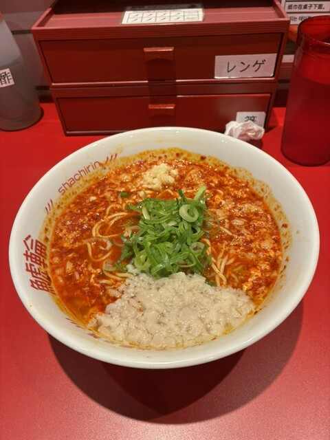
旨辛にんにくラーメン
🍽️ 推薦：旨辛にんにくラーメン基本辛麺 (1辛)味噌/豚骨系
2. 宮棊子麵 神宮店
📍 熱田神宮佔地內
🕐 9:00-16:30 年中無休
⭐ Tabelog 3.47（1205 則）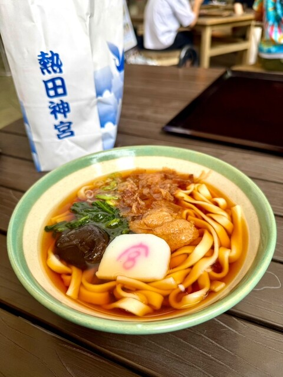
宮福きしめん
🍽️ 推薦：宮福きしめん (1200円)基本きしめん月見きしめん
3. 驛釜棊子麵 中央通り
📍 愛知縣中村區名站1-1-4 JR名古屋站內
🕐 7:00 開始營業
⭐ Tabelog 3.49 / TripAdvisor 3.6（1153+ 則）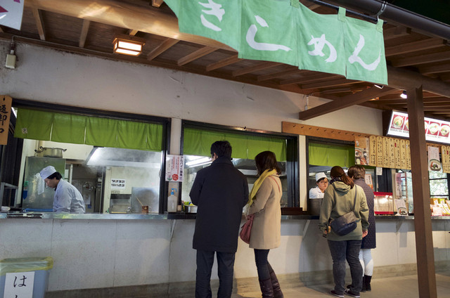
驛釜きしめん
🍽️ 推薦：驛釜きしめん味噌煮込みきしめん小倉トースト套餐
4. 芭蕉庵 蕎麥麵
📍 三重縣桑名市駒江270（名花之里園區內）
⭐ TripAdvisor 3.16（14+ 則）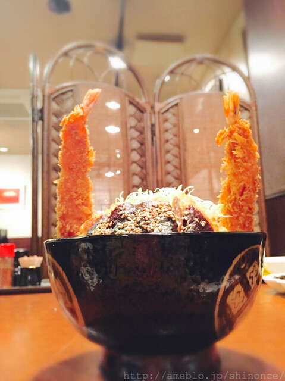
芭蕉庵御膳
🍽️ 推薦：芭蕉庵御膳 (套餐)雞南蛮蕎麥月見蕎麥
🍞 另有 Marseilles Bakery Restaurant 在園區內，白天較便宜
5. 氣晴亭
📍 愛知県名古屋市中区千代田5-21-6
⚠️ 不可刷卡
⭐ Google Maps 4.1（60+ 則）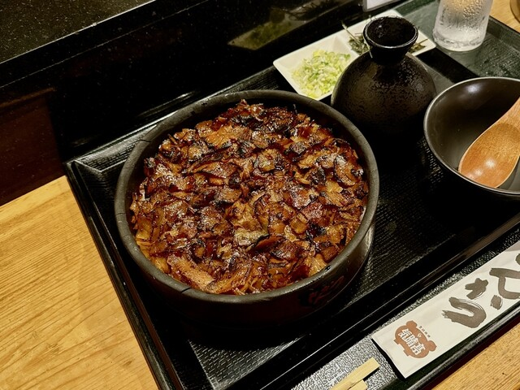
鯛魚蓋飯 + 味噌炸豬排
🍽️ 推薦：鯛魚蓋飯 (鯛めし)味噌炸豬排定食海老天丼
6. Ramen 十夢
📍 愛知県名古屋市昭和区御器所2-1-2
⚠️ 週三公休 · 不可刷卡
⭐ Tabelog 3.63（656 則）· 拉麵百名店 2025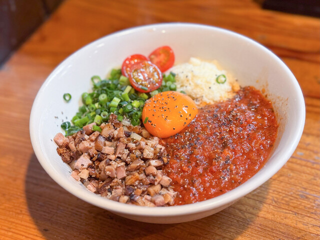
特製まぜそば
🍽️ 推薦：特製まぜそば (拌麵)特製拉麵味噌拉麵
7. 若鯱家 名古屋駅エスカ店
📍 名古屋車站地下街ESCA內
⭐ Tabelog 3.6（220+ 則）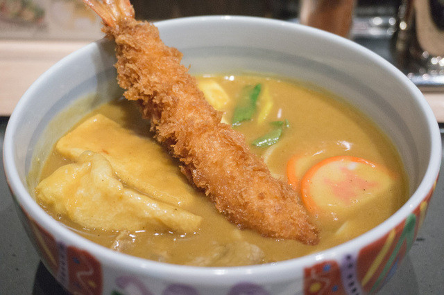
名物カレーうどん
🍽️ 推薦：名物カレーうどん咖哩UJtan (沾麵)咖哩烏龍定食
8. 千吉 WINC AICHI店
📍 愛知県中村區名站4-4-38（WINC AICHI大樓）
⭐ Google Maps 3.3（80+ 則）
日替午餐
🍽️ 推薦：日替午餐套餐 (~500円)豆皮烏龍 (きつねうどん)咖哩烏龍麵
9. 鯱乃家
📍 愛知県佛山市北區田幡2-14-1
⭐ Ekiten 3.3（8+ 則）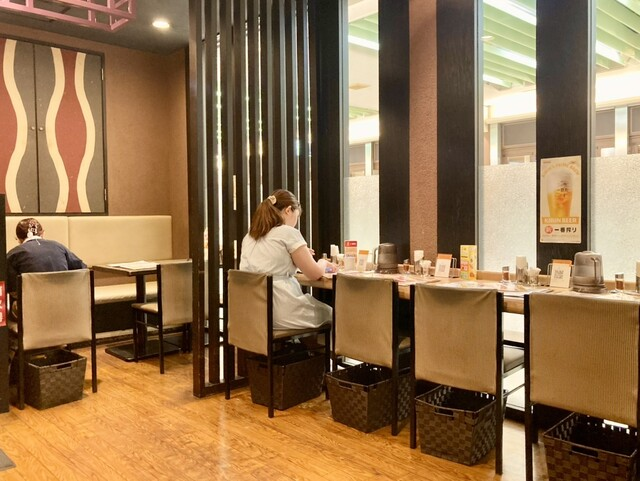
極太咖哩烏龍
🍽️ 推薦：咖哩烏龍麵 (微辣)極太咖哩烏龍招牌定食
10. 山虎
📍 愛知県中村區名站3-28-12 大名古屋ビルヂング 3F
⭐ Tabelog 3.48 / Retty（418+ 則）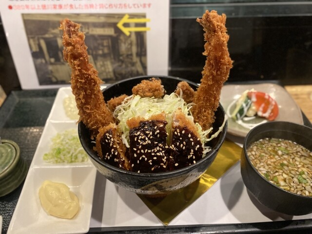
味噌おでん
🍽️ 推薦：味噌炸豬排定食 (1200円)味噌關東煮定食串炸 (串かつ)
📋 もつ焼き、おばんざい、牛すじどて飯等豐富菜單
11. 米寅 本店 (Kometora)
📍 愛知県名古屋市中区名駅2-41-10アストラーレ名駅1F
💳 可刷卡
⭐ Google 4.0 · 365 則評論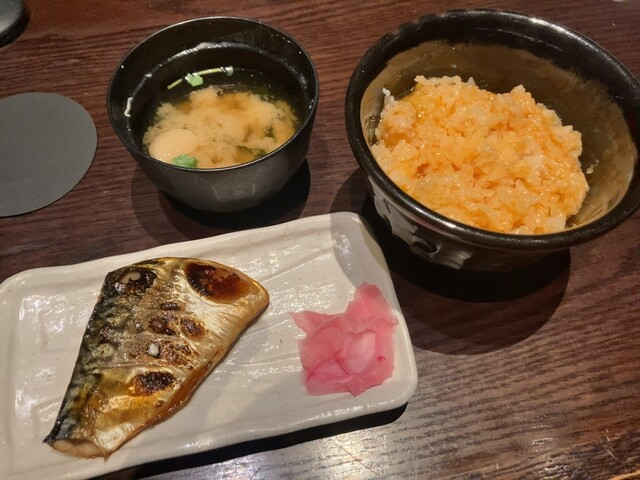
銀飯
🍽️ 推薦：銀飯牛肉旨煮重間八魚芝麻醬拌飯現煮米飯＋明太子
12. 酢重 (Suju Dining)
📍 愛知県名古屋市中区名駅1-1-3 JRゲートタワ 12F
💳 可刷卡
⭐ Google 4.2 · 390 則評論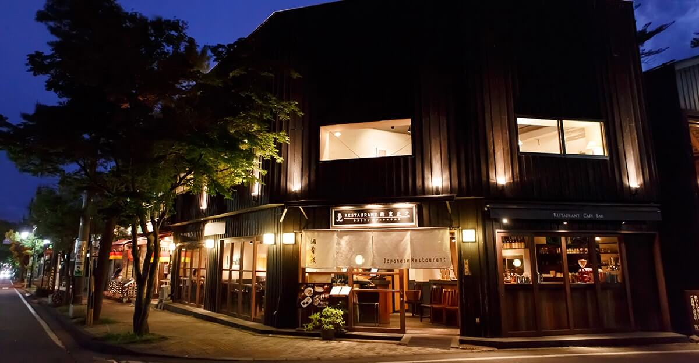
銅釜ご飯
🍽️ 推薦：銅釜現煮米飯丼豬角煮飯＋沙拉銅釜米飯＋味噌湯＋沙拉
13. 駅前の店 (Maruya 本店)
📍 愛知県名古屋市中区名駅1-1-4 名古屋うまいもん通り
💳 可刷卡
⭐ Google 4.3 · 2245 則評論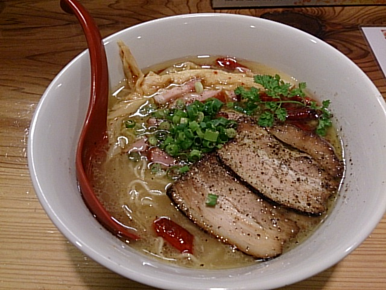
釜焚きご飯
🍽️ 推薦：釜煮雞蛋拌飯定食套餐
14. ある哥 (Anata to Hakata)
📍 愛知県名古屋市中区名駅4-14-10 柳橋Food Market 7F
💳 可刷卡
⭐ Google 4.7 · 1256 則評論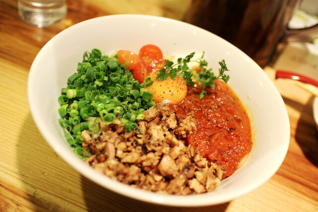
ラーメン
🍽️ 推薦：博多元祖拉麵軟骨拉麵追加麵條
15. 加藤軒 MATSUMURA
📍 愛知県名古屋市中区名駅3-28-28 Dai Nagoya Building 3F
💳 可刷卡
⭐ Google 4.5 · 524 則評論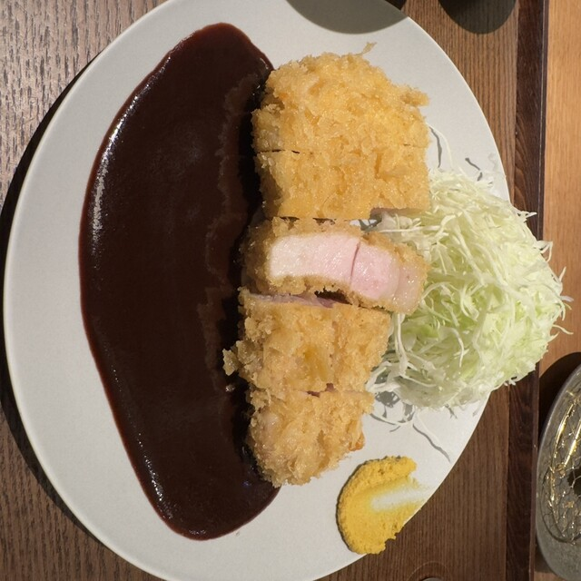
三口物
🍽️ 推薦：配菜定食味噌炸肉排復古風炸肉排套餐
16. メツゲライ・イノウエ
📍 愛知県名古屋市中区名駅3-28-12 Dai Nagoya Building B1
💳 可刷卡
⭐ Google 3.5 · 10 則評論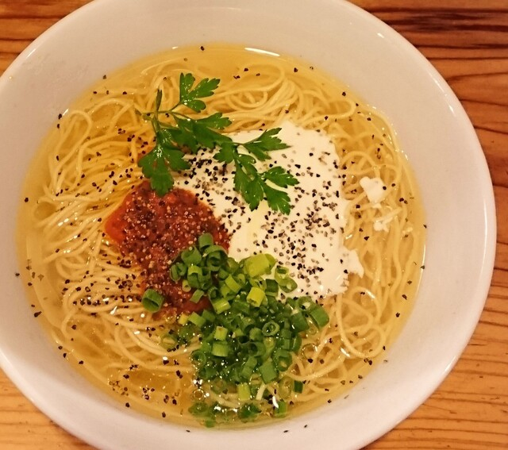
肉のおにぎり
🍽️ 推薦：覺王山培根舞茸飯糰黑豬肉糕紫蘇飯糰
17. 酉しず (Torishin)
📍 愛知県名古屋市中区名駅3-26-8 KDXビル B1F
💳 可刷卡
⭐ Google 4.2 · 1988 則評論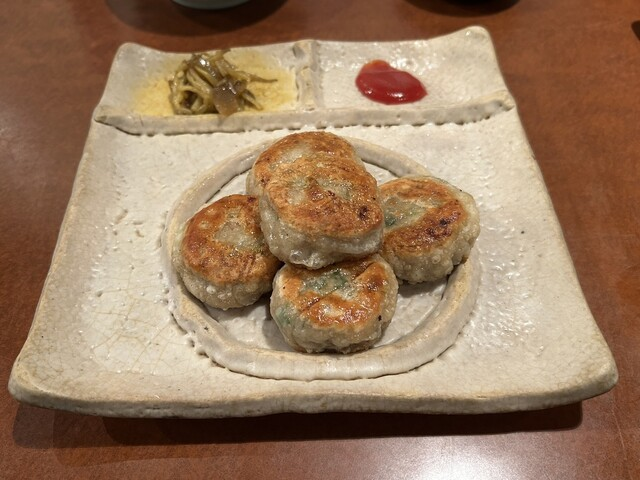
名古屋交趾雞麥飯
🍽️ 推薦：名古屋交趾雞親子丼名古屋交趾雞唐揚烤雞串定食
18. 味の牛たん喜助
📍 愛知県名古屋市中区名駅3-28-12 Dai Nagoya Building B1F
💳 可刷卡
⭐ Google 4.1 · 629 則評論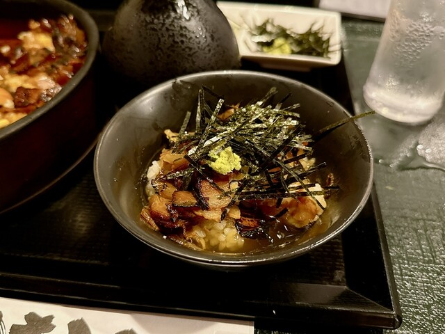
大麥飯
🍽️ 推薦：牛舌芯燒定食牛舌旨煮定食一目惚米飯＋味噌湯
⚠️ 實用提醒
💳 氣晴亭 — 不可刷卡，備現金
💳 Ramen 十夢 — 不可刷卡，週三公休
🕘 驛釜棊子麵 — 清晨7:00就開
🕘 宮棊子麵 — 9:00-16:30 全年無休
🏪 若鯱家 — 車站地下街ESCA
🌃 辛麺 鯱輪 — 深夜食堂，營業至凌晨